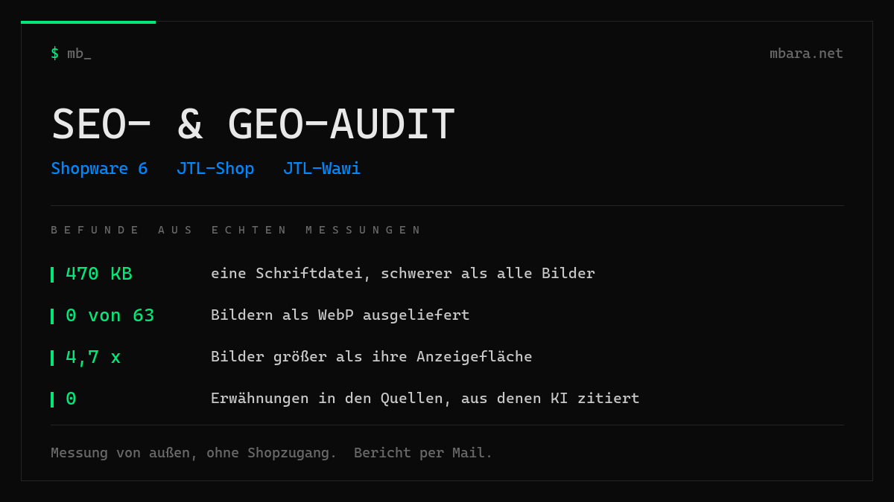

SEO- und GEO-Audit: Beispielbericht
Geprüfter Shop: Shopware 6, Fachhandel im gehobenen Preissegment, rund 4.300 Adressen in der Sitemap. Erhoben per HTTP-Prüfung, gerendertem Browser-DOM, Quelltext und Suchabfragen.

Das Wichtigste zuerst
Der Shop ist schnell. Die Seite ist nach 2,3 Sekunden fertig geladen, es gibt nur sechs Fremddomains, die robots.txt schließt Filter- und Sortierseiten sauber aus, Open Graph und Twitter Cards sind vollständig. Das ist mehr, als die meisten Shops dieser Größe vorweisen.
Drei Befunde kosten trotzdem messbar Sichtbarkeit.
Erstens ist der Shop unter zwei Adressen vollständig erreichbar, mit und ohne www, beide antworten mit Status 200 ohne Weiterleitung. Die Sitemap meldet beide Varianten getrennt an Suchmaschinen. Das Canonical zeigt zwar auf die www-Variante, die Sitemap arbeitet aber aktiv dagegen.
Zweitens hat die Startseite keine einzige H1. Nicht zwei, wie es bei Shop-Startseiten häufig vorkommt, sondern keine. Acht H2 und sechs H3 sind vorhanden, die stärkste inhaltliche Überschrift fehlt.
Drittens, und das ist der Punkt mit dem unmittelbarsten Effekt auf die
Klickrate: Der Shop trägt eine fünfstellige Zahl an Kundenbewertungen mit einem Schnitt von
4,99 im Organization-Markup. Dieses Markup verweist mit seiner url jedoch auf eine
andere Domain desselben Unternehmens. Die Bewertungen zahlen damit nicht auf den geprüften Shop
ein, und auf den Produktseiten fehlen sie vollständig.
1. HTTP-Grundlagen
| Adresse | Status | Weiterleitung |
|---|---|---|
| Domain ohne www | 200 | keine |
| Domain mit www | 200 | keine |
Befund: Der Shop ist doppelt erreichbar. Beide Varianten liefern denselben Inhalt unter Status 200 aus. Das Canonical-Tag zeigt korrekt auf die www-Variante und fängt den größten Teil des Problems ab.
Verschärfend: Die Sitemap-Übersicht enthält zwei Einträge, einen für die www-Variante und einen für die Variante ohne www, beide mit gleichem Zeitstempel. Der Shop meldet Suchmaschinen also selbst beide Adressen zur Indexierung an, obwohl nur eine kanonisch sein soll.
Nebenbefund: Die Serverantwort nennt die genaue PHP-Version sowie die Kennung der Hosting-Oberfläche. Das bringt keinen Vorteil und erleichtert das gezielte Suchen nach bekannten Lücken. Abschalten ist eine Zeile in der Serverkonfiguration.
2. robots.txt und Sitemap
Die robots.txt ist überdurchschnittlich gepflegt. Ausgeschlossen sind Warenkorb, Konto, Merkzettel, Registrierung, Anmeldung und interne Suche, dazu gezielt die Filter- und Sortierparameter für Reihenfolge, Preis, Versand, Hersteller und Eigenschaften. Damit entsteht kein Duplicate Content aus Filterkombinationen.
Kein Suchdienst und kein KI-Dienst ist ausgesperrt. Weder GPTBot, ClaudeBot, PerplexityBot, OAI-SearchBot noch Google-Extended sind blockiert. Das ist die Voraussetzung dafür, in KI-Antworten überhaupt vorkommen zu können, und sie ist erfüllt.
Befund: In der robots.txt fehlt die Zeile Sitemap:. Die
Sitemap existiert und ist erreichbar, über die robots.txt aber nicht auffindbar. Eine Zeile
Aufwand.
3. Performance
| Kennzahl | Wert |
|---|---|
| Anfragen | 117 |
| Summe der Dateigrößen | 4.638 KB |
| davon Bilder als Bildelement | 2.849 KB |
| davon Bilder aus CSS geladen | 1.298 KB |
| davon Skripte | 180 KB |
| Fremddomains | 6 |
| DOM fertig | 1.824 ms |
| Seite fertig geladen | 2.297 ms |
Die Ladezeiten sind gut. Das Gewicht ist es nicht: rund 4,1 MB der 4,6 MB sind Bilder.
3.1 Bildgewicht
Die sechs Kachelbilder der Startseite werden über CSS als Hintergrund geladen und tauchen deshalb in keiner Bilderliste auf. Sie summieren sich auf 1.298 KB, das größte allein auf 444 KB. Dazu kommen drei Produktbilder mit 550, 419 und 409 KB. Ein einzelnes Produktbild mit 550 KB ist für eine Übersichtsseite sehr viel.
3.2 Ausgeliefert gegen dargestellt
| Bild | geliefert | angezeigt | Faktor |
|---|---|---|---|
| Produktbild Übersicht | 1000 x 1000 | 378 x 378 | 2,6 |
| Produktbild Übersicht | 1000 x 1000 | 380 x 380 | 2,6 |
| Logo | 480 x 167 | 187 x 65 | 2,6 |
Ein Faktor von 2 ist auf hochauflösenden Displays vertretbar, 2,6 liegt knapp darüber. Für sich genommen kein schwerer Befund, in Kombination mit den absoluten Dateigrößen aber der Hebel: Ein Bild, das mit 380 Pixeln dargestellt wird, braucht keine 550 KB.
3.3 Kein modernes Bildformat im Einsatz
Von 63 Bildern der Startseite liegt kein einziges als WebP oder AVIF vor. Alles wird als JPEG oder PNG ausgeliefert. Das ist die wirksamste Einzelmaßnahme in diesem Bericht. Bei Fotos dieser Art sind mit WebP typischerweise 50 bis 70 Prozent der Bytes einzusparen, ohne sichtbaren Qualitätsverlust. Auf die gemessenen 4,1 MB bezogen wären das grob 2 bis 2,8 MB weniger pro Seitenaufruf.
3.4 Drittanbieter
Nur sechs Fremddomains: ein Newsletter-Dienst über zwei Adressen, ein Bewertungssiegel über zwei Adressen, ein Zahlungsanbieter, ein Content-Netzwerk. Kein Tag Manager, keine Werbenetzwerke, kein Tracking-Wildwuchs. Das ist angenehm schlank und gehört ausdrücklich als Pluspunkt vermerkt.
4. Technisches SEO
4.1 Keine H1 auf der Startseite
| Ebene | Anzahl |
|---|---|
| H1 | 0 |
| H2 | 8 |
| H3 | 6 |
Für Suchmaschinen ist die H1 das stärkste inhaltliche Signal einer Seite. Auf der Startseite fehlt sie vollständig. Auf Kategorie- und Produktseiten ist die Struktur dagegen korrekt, dort gibt es jeweils genau eine H1. Lösung: Die bestehende Hauptüberschrift von H2 auf H1 umstellen.
4.2 Kopfbereich: vollständig
Title 55 Zeichen, Description 129 Zeichen, Canonical korrekt, index, follow,
Open Graph mit sechs Angaben vollständig, Twitter Cards mit fünf Angaben vollständig. Hier gibt
es nichts zu tun. Das ist seltener, als man denkt.
5. Strukturierte Daten
5.1 Ausschließlich Microdata, kein JSON-LD
Es existiert kein einziger JSON-LD-Block. Die Auszeichnung erfolgt vollständig über Microdata im HTML, gemessen 204 Attribute auf der Startseite. Das ist gültig und wird von Google gelesen, macht die Auszeichnung aber abhängig vom Template. Bei einem Theme-Update ist dies die Stelle, an der Angaben unbemerkt verloren gehen.
5.2 Produktseiten: vorbildlich gefüllt
Vorhanden sind name, sku, productID,
gtin13, mpn, description, price,
priceCurrency, availability, dazu BreadcrumbList und
Offer. Dass sowohl GTIN als auch Herstellernummer gepflegt sind, ist die Ausnahme
und nicht die Regel. Zwei Felder sind leer ausgezeichnet: brand und
image tragen das Attribut, aber keinen Wert.
5.3 Der wertvollste Befund: Bewertungen am falschen Ziel
Das Organization-Markup der Startseite trägt eine fünfstellige Bewertungszahl mit einem
Schnitt von 4,99. Das Unternehmen betreibt mehrere Standorte und zwei Onlineshops. Die
gesammelten Bewertungen hängen an einem Organization-Block, dessen url auf den
jeweils anderen Shop verweist.
Praktische Folge in zwei Stufen:
- Die Bewertung ist als Unternehmensbewertung ausgezeichnet, nicht als Produktbewertung.
Sie kann damit in der Suche nicht als Sterne beim Produkt erscheinen. Auf den geprüften
Produktseiten ist kein
aggregateRatingvorhanden. - Die Zuordnung zeigt auf eine fremde Adresse. Selbst als Unternehmenssignal zahlt sie damit nicht auf den geprüften Shop ein.
Von allen Punkten in diesem Bericht hat dieser den unmittelbarsten Effekt auf die Klickrate in der Suche. Eine fünfstellige Bewertungszahl mit einem Schnitt von 4,99 ist ein außergewöhnlich starkes Signal, das derzeit im Suchergebnis nicht sichtbar wird.
5.4 Fehlende Angaben
| Angabe | Wirkung |
|---|---|
| WebSite mit SearchAction | keine Suchbox im Google-Ergebnis möglich |
| FAQPage | häufig zitierte Quelle für KI-Antworten |
| aggregateRating am Produkt | keine Sterne beim Produkt in der Suche |
| address, telephone, sameAs | Firma schlechter als Entität erkennbar |
6. Sichtbarkeit in KI-Antworten
Sprachmodelle wie ChatGPT oder Perplexity erfinden keine Kaufempfehlungen. Sie stützen sich auf Test- und Vergleichsbeiträge, die im offenen Netz stehen. Entscheidend ist deshalb nicht, wie der eigene Shop formuliert ist, sondern ob er in diesen Quellen auftaucht.
Führende Quellen der Kategorie: sechs Vergleichs- und Testportale, darunter
ein großes Fachmagazin der Branche.
Dort genannte Marken: fünf Hersteller aus dem Einsteiger- und
Mittelklassebereich.
Ergebnis: Der Shop kommt in keiner dieser Quellen vor. Gefunden wurde er in
Bewertungsportalen, in einem Preisvergleich und in den Händlerverzeichnissen zweier Hersteller,
also ausschließlich in Verzeichniseinträgen, nicht in redaktionellen Beiträgen.
Was daraus folgt: Ein Sichtbarkeits-Tool ändert daran nichts. Kein Werkzeug kann bewirken, dass ein fremdes Portal über einen Shop schreibt. Der Hebel liegt bei Beiträgen, die das passende Segment behandeln, und bei einem gefüllten Organization-Markup, damit die Firma überhaupt als eigenständige Entität erkannt wird.
7. Maßnahmen nach Priorität
| Prio | Maßnahme | Aufwand |
|---|---|---|
| Hoch | Bilder als WebP ausliefern. Größter Einzelhebel, grob 2 bis 2,8 MB pro Seitenaufruf. | mittel |
| Hoch | Organization je Domain mit eigener url auszeichnen, Bewertungen korrekt zuordnen. | gering |
| Hoch | Dauerhafte Weiterleitung auf die www-Variante, zweiten Sitemap-Eintrag entfernen. | gering |
| Hoch | H1 auf der Startseite setzen. | gering |
| Mittel | Produktbilder in Anzeigegröße ausliefern statt 1000 x 1000. | mittel |
| Mittel | Kachelbilder verkleinern, das größte wiegt 444 KB. | gering |
| Mittel | Sitemap-Zeile in die robots.txt aufnehmen. | gering |
| Mittel | Nennung in Vergleichsbeiträgen des eigenen Preissegments betreiben. | laufend |
| Niedrig | brand und image im Produkt-Markup mit Werten füllen. | gering |
| Niedrig | WebSite-Schema mit SearchAction, FAQ-Inhalte als FAQPage auszeichnen. | gering |
| Niedrig | Serverkennung und PHP-Version nicht mehr ausliefern. | gering |
8. Offene Fragen
Diese Punkte sind von außen nicht feststellbar. Sie stehen bewusst nicht als Befund, sondern als Fragen, deren Beantwortung das Bild vervollständigt.
- Läuft ein vollständiger Produktdatenfeed an Google Merchant Center und stimmt er mit den Angaben auf der Produktseite überein? Für produktbezogene KI-Antworten ist der Feed eine eigene Datenquelle neben der Website.
- Ist die Erzeugung moderner Bildformate deaktiviert oder sind die Bilder nur nicht neu erzeugt worden?
- Welches Plugin erzeugt den Organization-Block mit der fremden Domain?
- Werden Produktbewertungen erhoben, und wenn ja, warum erscheinen sie nicht im Produkt-Markup?
- Gibt es eine Einwilligungsverwaltung, und welche der sechs Fremddomains laden vor der Einwilligung?
- Tatsächliche Felddaten zu den Core Web Vitals aus der Search Console.
9. Wie gemessen wurde
- HTTP-Prüfung beider Domainvarianten per direktem Aufruf ohne Browser.
- Seitengewicht und Ressourcenliste aus der Resource Timing API des gerenderten Browsers bei 1440 x 900.
- Bildmaße aus dem Vergleich der gelieferten Pixelbreite zur tatsächlichen Darstellungsbreite im Layout.
- Strukturierte Daten aus dem gerenderten DOM und zusätzlich aus dem Rohquelltext, weil die Auszeichnung als Microdata und nicht als JSON-LD vorliegt.
- Sitemap vollständig heruntergeladen und ausgewertet.
- KI-Sichtbarkeit über Suchabfragen nach den führenden Vergleichsquellen der Kategorie und Abgleich der dort genannten Marken.
Einschränkungen, ausdrücklich benannt:
- Es liegt kein PageSpeed-Punktwert vor. Die genannten Dateigrößen sind belastbar, die Ladezeiten nur eingeschränkt, weil ohne gedrosselte Verbindung gemessen. Ein Mittelklasse-Smartphone im Mobilfunknetz rechnet um ein Vielfaches langsamer.
- Die angegebenen 4.638 KB sind die Summe der Dateigrößen, nicht die Zahl der tatsächlich übertragenen Bytes. Bei Textdateien liegt die Übertragung durch Komprimierung darunter, bei Bildern entspricht sie der Dateigröße.
- Symbole im SVG-Format wurden aus der Betrachtung "geliefert gegen dargestellt" herausgenommen. Bei Vektorgrafiken sagt das Pixelmaß nichts über die Dateigröße aus.
- Geprüft wurden Startseite, eine Kategorieseite und eine Produktseite.
Einen solchen Bericht für Ihren Shop
Ich messe Ihren Shop von außen, ohne Zugang zu Ihrem System. Sie schicken mir nur die Adresse. Der Bericht kommt als PDF per Mail, Preis auf Anfrage.
Audit anfragen